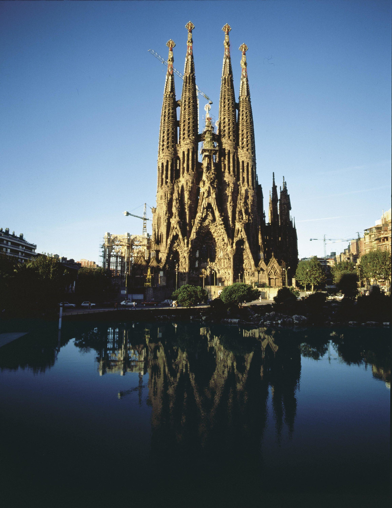
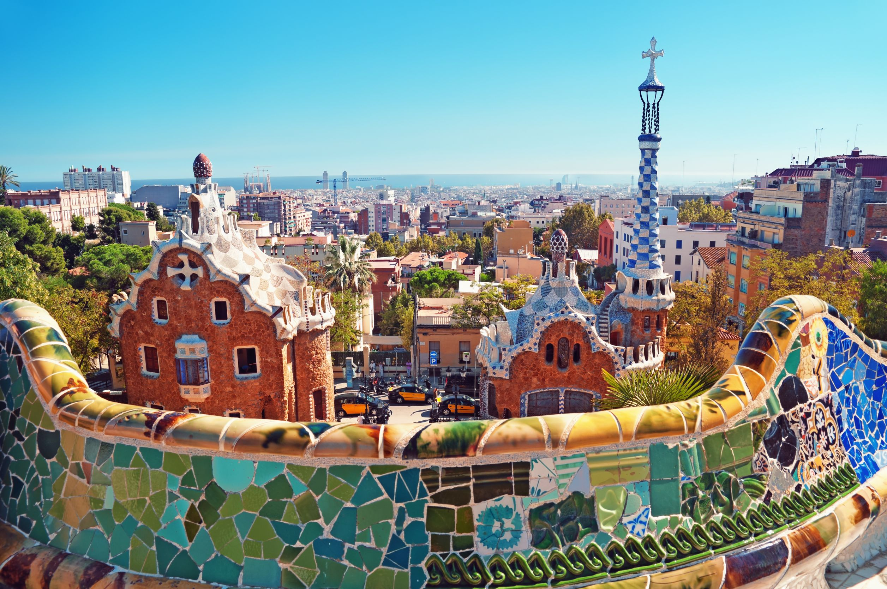

SPAIN
LA SAGRADA FAMILIA
Relying solely on private donations, the Sagrada Família's construction progressed slowly and was interrupted by the Spanish Civil War. In July 1936, revolutionaries set fire to the crypt and broke their way into the workshop, partially destroying Gaudí's original plans, drawings and plaster models, which led to 16 years of work to piece together the fragments of the master model.[12] Construction resumed to intermittent progress in the 1950s. Advancements in technologies such as computer aided design and computerised numerical control (CNC) have since enabled faster progress and construction passed the midpoint in 2010. However, some of the project's greatest challenges remain, including the construction of ten more spires, each symbolising an important Biblical figure in the New Testament.[11] It was anticipated that the building would be completed by 2026, the centenary of Gaudí's death,[13] but this has now been delayed due to the COVID-19 pandemic

PARK GUELL
Parc Güell (Catalan: Parc Güell [ˈpaɾɡ ˈɡweʎ]; Spanish: Parque Güell) is a privatized park system composed of gardens and architectural elements located on Carmel Hill, in Barcelona, Catalonia, Spain. Carmel Hill belongs to the mountain range of Collserola – the Parc del Carmel is located on the northern face. Park Güell is located in La Salut, a neighborhood in the Gràcia district of Barcelona. With urbanization in mind, Eusebi Güell assigned the design of the park to Antoni Gaudí, a renowned architect and the face of Catalan modernism.
The park was built from 1900 to 1914 and was officially opened as a public park in 1926. In 1984, UNESCO declared the park a World Heritage Site under "Works of Antoni Gaudí"

PICASSO MUSEUM
The Musée Picasso is an art gallery located in the Hôtel Salé in rue de Thorigny, in the Marais district of Paris, France, dedicated to the work of the Spanish artist Pablo Picasso (1881–1973). The museum collection includes more than 5,000 works of art (paintings, sculptures, drawings, ceramics, prints, engravings and notebooks) and tens of thousands of archived pieces from Picasso’s personal repository, including the artist's photographic archive, personal papers, correspondence, and author manuscripts. A large portion of items were donated by Picasso’s family after his death, in accord with the wishes of the artist, who lived in France from 1905 to 1973

ROYAL PALACE OF MADRID
The Royal Palace of Madrid (Spanish: Palacio Real de Madrid) is the official residence of the Spanish royal family at the city of Madrid, although now used only for state ceremonies. The palace has 135,000 m2 (1,450,000 sq ft) of floor space and contains 3,418 rooms.[1][2] It is the largest functioning royal palace and the largest by floor area in Europe.[3]
The palace is now open to the public, except during state functions, although it is so large that only a selection of rooms are on the visitor route at any one time, the route being changed every few months. An admission fee of €13 is charged; however, at some times it is free. The palace is owned by the Spanish state and administered by the Patrimonio Nacional, a public agency of the Ministry of the Presidency.[4] The palace is on Calle de Bailén ("Bailén Street") in the western part of downtown Madrid, east of the Manzanares River, and is accessible from the Ópera metro station. Felipe VI and the royal family do not reside in the palace, choosing instead the Palace of Zarzuela in El Pardo

MOUNT TEIDE
If measured from the ocean floor, its height of 7,500 m (24,600 ft) makes Teide the third-highest volcano in the world,[7] and is described by UNESCO and NASA as Earth's third-tallest volcanic structure.[8][9][b] However, as Teide was formed just 170,000 years ago due to volcanic activity following a catastrophic landslide, Teide's base is actually situated in the Las Cañadas crater (the remains of an older, eroded, extinct volcano) at a height of around 2,190 m (7,190 ft) above sea level. Teide's elevation above sea level makes Tenerife the tenth highest island in the world. Teide is an active volcano: its most recent eruption occurred in late 1909 from the El Chinyero vent on the northwestern Santiago rift.